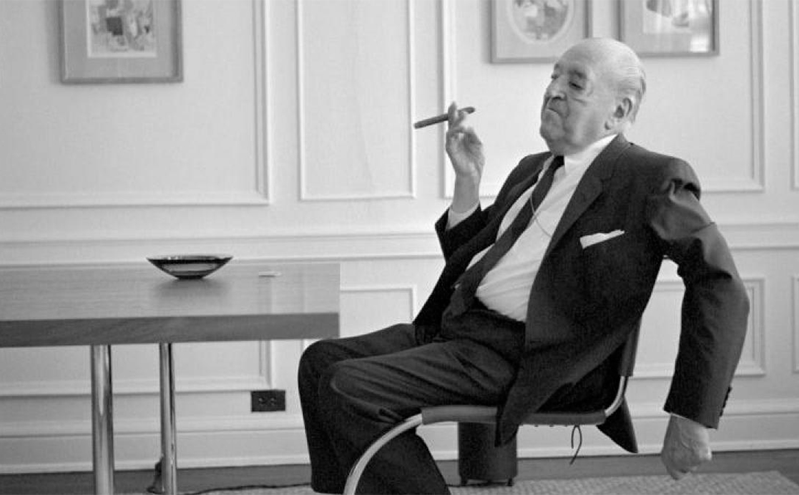
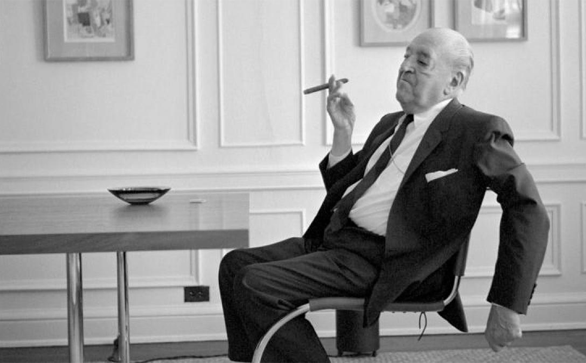

Ludwig Mies Van Der Rohe (1886-1969)
Ludwig Mies van der Rohe nació en Alemanía el 27 de marzo de 1886. Allí mismo desarrolló su carrera como Arquitecto y director de la Escuela de Arte y Diseño de la Bauhaus (1930 a 1933). Al final de la Primera Guerra Mundial entró en contacto con la vanguardia y se lo considera como padre de esta tendencia. Se identificaba por decir que no era necesario adornar un edificio, sino que el valor del mismo estaba en los detalles. Fallecé a los 83 años de edad en Chicago, Estados Unidos el 17 de agosto de 1969.

Robert Mangold
El artista Robert Mangold (86) nacido en el norte de North Tonawanda, Nueva York el 12 de octubre de 1937 es, junto a Robert Ryman (1930-2019), el principal representante de la pintura minimalista, corriente abstracta tendente a la máxima simplificación de formas y colores, reducidas al mínimo para remarcar el componente conceptual de la creación artística, considerado más relevante que el sustrato material de la obra. Mangold ha sido considerado uno de los miembros iniciadores del movimiento minimalista, en el que la forma, el color y la realización de series que exploran a fondo un ideario, son fundamentales en su producción. Su carrera está enfocada en la investigación de los principios básicos de la pintura a través de los objetos geométricos, gama de colores, etc.

Robert Ryman
Robert Ryman nació en Nashville, Nueva York el 30 de mayo de 1930. En el movimiento se identificaba por sus paletas de colores monocromáticas y conceptuales. La mayoría de sus obras presentan una pincelada influida por el expresionismo abstracto, en pintura blanca sobre lienzos cuadrados o superficies metálicas. En 1953 empezó a trabajar en el Museo de Arte Moderno y en ese mismo año realizó su primera obra. En 1994 fue miembro de la Academia Americana de las Artes y las Letras de Nueva York, en el 2005 se le otorgó un premio internacional por la Asociación de Arte de Japón. Falleció a los 88 años de edad en la ciudad de Manhattan, Nueva York el 8 de febrero de 2019.

Solomon “Sol” LeWitt (1928-2007)
Sol LeWitt nacido el 9 de septiembre de 1928 en New York fue un artista ligado al arte conceptual y minimalista a través del dibujo, la pintura, la fotografía y más. Como artista, no le significaba tanto la obra final en sí, sino el concepto de esta. El objetivo principal con el arte era influir en los demás y en los espacios que lo habitaban. Se destacó principalmente en el uso de la geometría. Falleció a los 78 años de edad el 8 de abril de 2007, en New York, Estados Unidos a causa de cáncer.